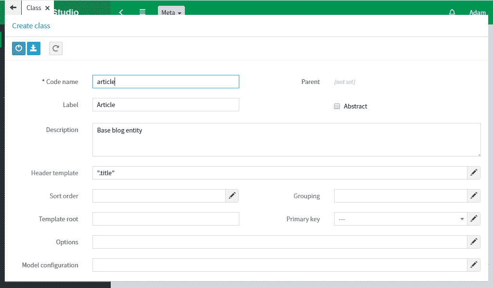

Article class
Select Classes from the side menu. Basic entities of a business app are described here.
Create a class with article code name. New tabs and fields will appear on the form after saving the class.
The code name of each data element (class, attribute, view, and others) is the app identifier and must be unique in its context. For example, an attribute name is unique within a class.
The name can only consist of characters a-z, A-Z, 0-9 and hyphen. Use a single style of writing code names (recommended is lowerСamelСase, when all words are spelled together with a capital letter except the first).
Select a Attributes tab. A panel with available commands will appear when you hover over attribute table.
Create a title attribute. The attribute codename follows the same rules as the class name. Additionally, some service attributes may begin with an underscore. When creating an attribute, you must specify its type. It is determined by the stored data. For title attribute, specify String type. An article should always have a title that should not be repeated in other articles. Select Required and Unique checkboxes. They define attribute validation rules.
Go to Search tab and check Common searchable and Select searchable boxes. Now articles can be found by searching among titles.
Go to Article class.
Specify ".title" in the Header template field.
The template determines article presentation in string form.
For example, for drop-down lists and the like.
If no template is specified, the object identifier is displayed.
".title" value will select data from the title attribute. See
Header
for more details.
Create a content attribute with Text type. It will store article text. The Text type differs from String type in the increased input field and the way of storing in some databases.
Create a date attribute with Date type. It will keep the article date.
Create a status attribute with String type. It will store article state. Status can only have fixed values. Go to Enums tab and create a new enumeration. On enumeration form, create Items (status elements):
- draft (Draft)
- published (Published)
- archived (Archived)
Save all changes and export metadata to meta/app folder.